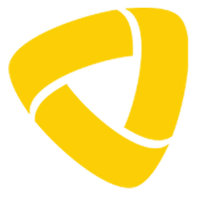

Сибирь — Трактор итог матча 17 ноября
Статистика матча
- 29Броски в створ18
- 0 из 0Голы в большинстве0 из 4
- 0Штрафные минуты8
- 0Удаления4
- 28Выигранные вбрасывания18
- 59 %Владение шайбой41 %
- 75Входы в зону атаки61
Удаления по минутам 4
- 1-й период
- Светлаков Андрей №87Игра высоко поднятой клюшкой2 мин
- Шэн Александр №16Подножка2 мин
- 2-й период
- Катчук Борис №13Толчок клюшкой2 мин
- 3-й период
- Джиошвили Максим №7Выброс шайбы2 мин
Данные лиги.
- ТурнирКХЛ
Коротко о матче
Сибирь — Трактор 4:1: хозяева победили.
Главное перед игрой — серия: Сибирь — 3 поражения подряд. По форме разница была заметной: в пяти последних матчах Трактор — 3 победы, Сибирь — 1 победа. Слабое место — оборона: Сибирь — в среднем 3,0 пропущенной шайбы за игру в этих пяти матчах.
Стоит учесть и площадку: дома Сибирь — 2 победы в 10 матчах, на выезде Трактор — 5 побед в 10. До этого команды встречались 31 января 2026 года: Сибирь — Трактор 1:3.
Форма: последние матчи
 Сибирь 1 победа из 5
Сибирь 1 победа из 5
 П1:3
П1:3 В3:1
В3:1 П3:4
П3:4 П1:4
П1:4 П1:3
П1:3
 Трактор 3 победы из 5
Трактор 3 победы из 5
- В5:3
 П2:3
П2:3 В5:2
В5:2
П3:4 В5:1
В5:1
Личные встречи
- Сибирь1:3Трактор
- Трактор4:1Сибирь
- Трактор4:3Сибирь
- Сибирь3:4БТрактор
- Трактор3:4Сибирь
- Сибирь3:4БТрактор
Положение в таблице
| Команда | Место | И | В | П | Голы | Очки |
|---|---|---|---|---|---|---|
| 11 | 28 | 10 | 18 | 63:81 | 24 | |
| 8 | 28 | 12 | 16 | 66:71 | 29 |
Куда дальше
Все прогнозы дня — в TelegramПрогнозы на КХЛ, НХЛ и футбол, итоги каждое утро. Бесплатно.
Открыть каналМатериалы носят информационный характер и не гарантируют результат. Реклама букмекеров на сайте не размещается. Сайт только для совершеннолетних (18+).